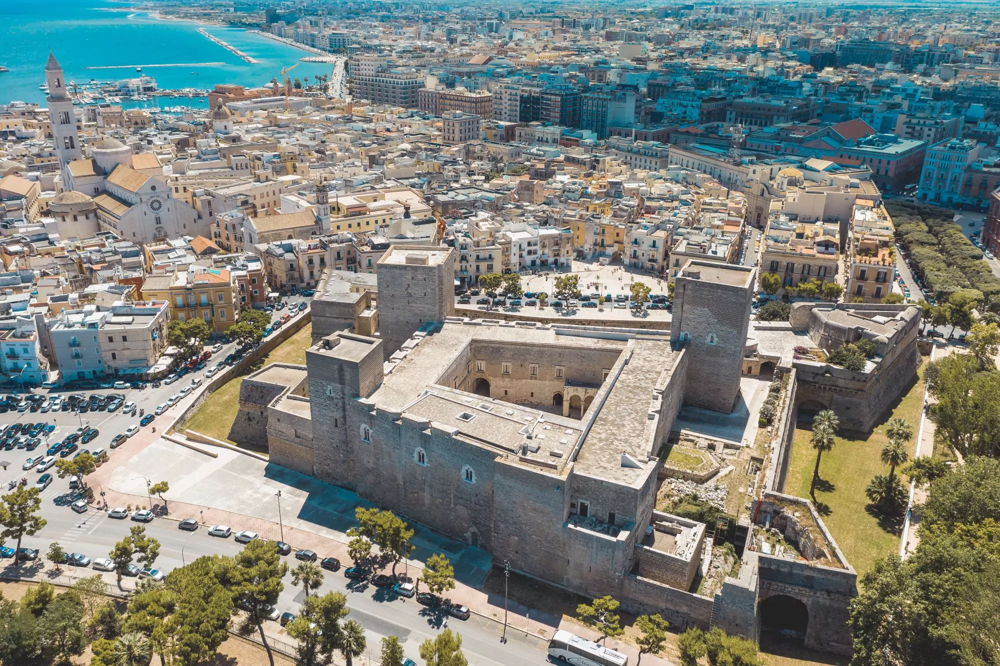
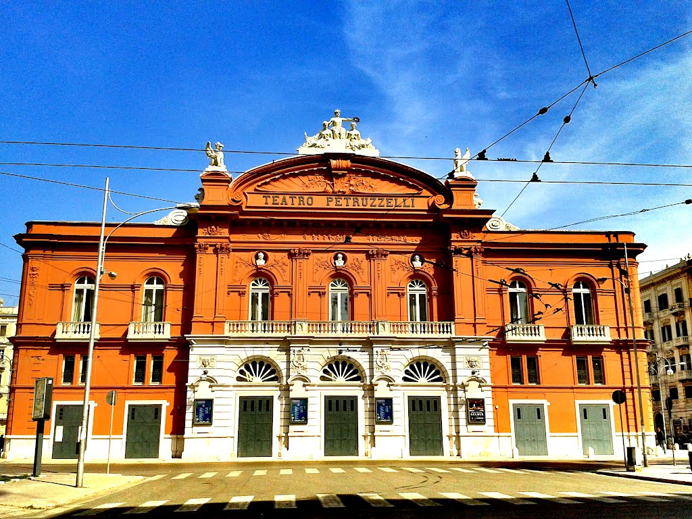

Accesso al catalogo
Lista dei monumenti e siti



Castello Normanno-Svevo[Wikidata]
XII secolo, Architettura militare normanna-sveva[Getty AAT]
Scopri di più

Teatro Petruzzelli[Wikidata]
XX secolo, Architettura teatrale in stile eclettico,con elementi neoclassici e liberty[Getty AAT]
Scopri di più